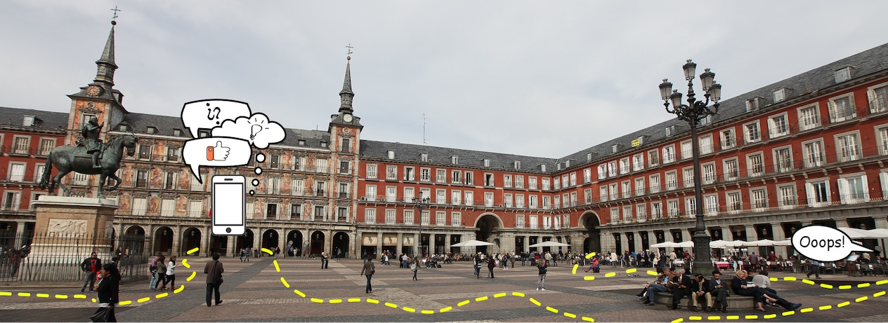

Búsquedas | Rankings | Instrucciones
(#) Sigue la Pista
⭐ El juego de pistas y rompecabezas que te enseñará los rincones más históricos de Madrid. 🔍
 Elige una de nuestras [Búsquedas](#busquedas) y utiliza tu móvil para
responder a las preguntas y avanzar de pista en pista mientras recorres distintas zonas de Madrid centro y aprendes
sobre su historia y sus personajes. ¡Compite contra los demás jugadores e intenta resolver la Búsqueda lo más rápido
posible!. Los equipos más rápidos de cada Búsqueda aparecen listados en el [ranking](#rankings).
Jugar es gratuito y solo tienes que instalar Telegram en tu
móvil,
una conocida aplicación de mensajería. Una vez la hayas instalado, solo tienes que escribir al Bot de Sigue la Pista para empezar. Puedes leer
instrucciones detallas [aquí](#instrucciones).
(#) Búsquedas
(###) Sol

**Punto de inicio y final**: Puerta del
Sol.
**Distancia recorrida**: 2.5km.
**Duración**: una hora aproximadamente.
(###) Santa Ana

**Punto de inicio y final**: Plaza de Santa
Ana.
**Distancia recorrida**: 2.5km.
**Duración**: una hora aproximadamente.
(#) Rankings
(###) Sol
(###) Santa Ana
(#) Instrucciones